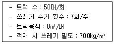
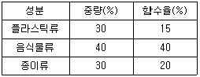
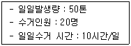

폐기물처리산업기사 (2016-05-08 기출문제)
1과목: 폐기물개론
1. 인구 200만명의 도시에서 발생되는 폐기물의 가연성분을 이용하여 RDF를 생산하고자 할 때 최대생산량(ton/일)은? (단, 폐기물중 가연성분 80%(무게기준), 가연성분 회수율 50%(무게기준), 폐기물 발생량 1.3kg/인·일)
- 4,180
- 3,210
- 2,350
- 1,040
(정답률: 79%)

2. 함수율 70%인 고형폐기물이 건조되어 함수율 10%로 되었다면 건조 후 중량은 처음의 몇 %인가? (단, 비중은 1.0 기준)
- 23.3%
- 33.3%
- 43.3%
- 53.3%
(정답률: 93%)
3. 함수율 40%인 3kg의 쓰레기를 건조시켜 함수율 15%로 하였을 때 건조 쓰레기의 무게(kg)는? (단, 비중은 1.0 기준)
- 1.12
- 1.41
- 2.12
- 2.41
(정답률: 75%)
4. 약간 경사진 판에 진동을 줄 때 무거운 것이 빨리 판의 경사면 위로 올라가는 원리를 이용한 것으로 Pneumatic Table 이라고도 하는 것은?
- Stoners
- Flotation
- Separators
- Secators
(정답률: 77%)
5. 폐기물 발생량 예측방법 중 모든 인자를 시간에 대한 함수로 나타낸 후 시간에 대한 함수로 표현된 각 영향 인자들 간의 상관관계를 수식화하는 방법은?
- CORAP
- Trend Method
- Dynamic Silmulation Model
- Multiple Regression Model
(정답률: 90%)
6. 폐기물 관리 시 비용이 가장 많이 드는 것은?
- 수거 및 운반
- 중간처리
- 저장
- 최종처리
(정답률: 96%)
7. 어느 도시의 인구가 50,000명이고 분뇨의 1인 1일당 발생량은 1.1 L이다. 수거된 분뇨의 BOD 농도를 측정하였더니 60,000mg/L이었고, 분뇨의 수거율이 30%라고 할 때 수거된 분뇨의 1일 발생 BOD량(kg)은? (단, 분뇨의 비중은 1.0 기준)
- 790
- 890
- 990
- 1,190
(정답률: 86%)
8. 다음의 폐기물의 성상분석의 절차 중 가장 먼저 시행하는 것은?
- 분류
- 물리적 조성
- 화학적 조성분석
- 발열량측정
(정답률: 96%)
9. 다음 중 LCA(Life Cycle Assessment)의 구성 요소가 아닌 것은?
- 개선평가
- 목록분석
- 영향평가
- 수행평가
(정답률: 82%)
10. 밀도가 1.5t/m3인 쓰레기 300ton을 유효적재 가능용적이 5m3인 트럭 1대를 이용하여 적환장에 운반하려고 한다면 적환장까지 몇 회를 운반하여야 하는가? (단, 기타 조건은 고려하지 않음)
- 30
- 40
- 50
- 60
(정답률: 77%)
11. 함수율 60%인 쓰레기와 함수율 90%인 하수슬러지를 5：1의 비율로 혼합하면 함수율(%)은? (단, 비중은 1.0 기준)
- 60
- 65
- 70
- 75
(정답률: 86%)
12. 수거 대상 인구가 200,000명인 지역에서 1주일 동안 생활폐기물수거상태를 조사한 결과 다음과 같다. 이 지역의 1인당 1일 폐기물 발생량(kg/인·일)은?

- 1.4
- 1.6
- 1.8
- 2.0
(정답률: 75%)
13. 폐기물의 효과적인 수거를 위한 수거노선을 결정할 때, 유의할 사항과 가장 거리가 먼 것은?
- 기존 정책이나 규정을 참조한다.
- 가능한 한 시계방향으로 수거노선을 정한다.
- U자형 회전은 가능한 피하도록 한다.
- 적은 양의 쓰레기가 발생하는 곳부터 수거한다.
(정답률: 100%)
14. 도시 생활쓰레기를 분류하여 다음과 같은 결과를 얻었을 때 이 쓰레기의 함수율(%)?

- 21.5
- 26.5
- 32.5
- 34.5
(정답률: 86%)
15. 평균 입경이 20cm인 폐기물을 입경 1cm가 되도록 파쇄할 때 소요되는 에너지는 입경을 4cm로 파쇄할 때 소요되는 에너지의 몇 배인가? (단, Kick의 법칙 적용, 1)
- 1.86배
- 2.64배
- 3.72배
- 4.12배
(정답률: 75%)
16. 산업폐기물 및 광산폐기물에 흔히 함유되어 있으며, 만성중독에 의해 이타이이타이병을 유발시키는 물질은?
- Hg
- Cr
- As
- Cd
(정답률: 89%)
17. 다음 경우의 쓰레기 수거 노동력(MHT)은? (단, 기타 사항은 고려하지 않음)

- 1
- 2
- 3
- 4
(정답률: 96%)
18. 슬러지 탈수 시 가장 탈수되기 어려운 슬러지 내 수분은?
- 간극모관결합수
- 모관결합수
- 표면부착수
- 내부수
(정답률: 79%)
19. 폐기물의 입도 분석결과 입도 누적곡선상의 10%, 30%, 60%, 90%의 입경이 각각 1, 5, 10, 20mm였다. 이때 균등계수와 곡률계수는?
- 균등계수 10, 곡률계수 1.0
- 균등계수 10, 곡률계수 2.5
- 균등계수 1, 곡률계수 1.0
- 균등계수 1, 곡률계수 2.5
(정답률: 80%)
20. 폐기물 1톤의 초기 겉보기 비중이 0.1, 압축 후 겉보기 비중이 0.6인 경우 부피감소율(VR, %)과 압축비(CR)는 각각 얼마인가?
- 81.1%, 3
- 83.3%, 3
- 81.1%, 6
- 83.3%, 6
(정답률: 68%)
2과목: 폐기물처리기술
21. 오염된 농경지의 정화를 위해 다른 장소로부터 비오염 토양을 운반하여 넣는 정화기술은?
- 객토
- 반전
- 희석
- 배토
(정답률: 92%)
22. 소각로에서 NOx 배출농도가 270ppm, 산소 배출농도가 12%일 때 표준산소(6%)로 환산한 NOx 농도(ppm)는?
- 120
- 135
- 162
- 450
(정답률: 56%)
23. 도시폐기물 유기성분 중 가장 생분해가 느린 성분은?
- 단백질
- 지방
- 셀룰로우스
- 리그닌
(정답률: 91%)
24. 슬러지 100m3의 함수율이 98%이다. 탈수 후 슬러지의 체적을 1/10로 하면 슬러지 함수율(%)은? (단, 모든 슬러지의 비중은 1임)
- 20
- 40
- 60
- 80
(정답률: 77%)
25. 퇴비화 숙성도의 지표로 이용할 수 없는 것은?
- 탄질비
- CO2 발생량
- 식물생육 억제정도
- 수분함량
(정답률: 55%)
26. 폐기물 처리 시에는 각종 분진이 다량 배출되며 분진의 제거 시에는 집진장치가 이용된다. 분진의 특성 중 집진성능에 영향을 미치지 않는 것은?
- 입경
- 비저항
- 밀도
- 중력가속도
(정답률: 68%)
27. 분뇨의 처리방식 중 습식 산화방식의 특징으로 가장 거리가 먼 것은?
- 완전 살균이 가능하다.
- 슬러지는 반응탑에서 연소된다.
- COD가 높은 슬러지처리에 전용될 수 있다.
- 건설비, 유지보수비, 전기료가 적게 든다.
(정답률: 72%)
28. 퇴비화 공정의 운영인자 중 C/N 비에 관한 설명으로 가장 거리가 먼 것은?
- C는 퇴비화 미생물의 에너지원이며 N은 미생물을 구성하는 인자가 된다.
- C/N이 높을 때(80 이상) 질소과잉 현상으로 퇴비화 반응이 느려진다.
- 퇴비화 초기 C/N 비는 25 ~ 40 정도가 적당하다.
- C/N이 낮을 때(20 이하) 유기질소가 암모니아화하여 악취가 발생될 가능성이 높다.
(정답률: 67%)
29. 탄소, 수소 및 황의 중량비가 83%, 14%, 3%인 폐유 3kg/hr을 소각시키는 경우 배기가스의 분석치가 CO2 12.5%, O2 3.5%, N2 84%이었다면 매시 필요한 공기량(Sm3/hr)은?
- 35
- 40
- 45
- 50
(정답률: 30%)
30. RDF에 관한 설명으로 틀린 것은?
- RDF의 조성은 주로 유기물질이므로 수분함량에 따라 부패되기 쉽다.
- RDF 중에 Cl 함량이 크면 다이옥신 발생 위험성이 높다.
- Pellet RDF의 수분함량은 4% 이하를 유지한다.
- Fluff RDF의 발열량은 약 2,500 ~ 3,500kcal/kg 정도의 범위이다.
(정답률: 70%)
31. 호기성 퇴비화 공정의 설계 운영고려 인자에 대한 설명으로 가장 거리가 먼 것은?
- C/N 비：초기 C/N비가 낮은 경우는 암모니아 가스가 발생하며 생물학적 활성이 떨어진 다.
- 입자 크기：폐기물의 적정입자크기는 5~10mm 정도이다.
- pH：적당한 분해작용을 위해서 pH 7~7.5 범위를 유지한다.
- 공기공급：공간부피는 30 ~ 36%가 적합하다.
(정답률: 53%)
32. 일일복토로 사용하는 데 가장 적합한 토양은?
- 통기성이 나쁜 점성토계의 토양
- 투수성, 통기성이 좋은 사질토계의 토양
- 부식물질을 적절히 함유한 양토계 토양
- 적당한 규격에 맞춘 slag
(정답률: 71%)
33. 매립물의 조성이 C40H83O30N인 경우 이 매립물 1mol당 발생하는 메탄(mol)은? (단, 혐기성 반응이다.)
- 22.5
- 28.5
- 32.5
- 38.5
(정답률: 43%)
34. 매립된 지 10년 이상인 매립지에서 발생되는 침출수를 처리하기 위한 공정으로 효율성이 가장 양호한 것은? (단, 침출수 특성：COD/TOC ＜ 2.0, BOD/COD ＜ 0.1, COD ＜ 500ppm)
- 역삼투
- 화학적 침전
- 오존처리
- 생물학적 처리
(정답률: 87%)
35. 프로판(C3H8) 5 Sm3의 연소에 필요한 이론공기량(Sm3)은?
- 94
- 106
- 119
- 124
(정답률: 64%)
36. 도시쓰레기 자원화의 목적으로 가장 거리가 먼 것은?
- 쓰레기의 감량화
- 자연보호
- 노동력창출
- 매립지의 수명 연장
(정답률: 94%)
37. HDPE&LDPE 합성차수막의 장점이 아닌 것은?
- 대부분의 화학물질에 대한 저항성이 높다.
- 유연하여 손상의 우려가 적다.
- 접합상태가 양호하다.
- 온도에 대한 저항성이 높다.
(정답률: 55%)
38. 폐기물 소각의 장점이 아닌 것은?
- 부피감소가 가능하다.
- 위생적 처리가 가능하다.
- 폐열이용이 가능하다.
- 2차 대기오염이 적다.
(정답률: 88%)
39. 매립지의 최종복토설비의 주요기능이 아닌 것은?
- 침출수발생량 감소 기능
- 생분해가능 조건 형성
- 식물성장 토양층 제공
- 병원균 매개체 서식 방지
(정답률: 45%)
40. 비정상적으로 작동하는 소화조에 석회를 주입하는 이유는?
- 유기산균을 증가시키기 위해
- 효소의 농도를 증가시키기 위해
- 칼슘 농도를 증가시키기 위해
- pH를 높이기 위해
(정답률: 90%)
3과목: 폐기물 공정시험 기준(방법)
41. 수분 40%, 고형물 60%, 휘발성고형물 30%인 쓰레기의 유기물 함량(%)은?
- 35
- 40
- 45
- 50
(정답률: 62%)
42. 자외선/가시선 분광법으로 분석되는 '항목－측정방법－측정파장－발색'의 순서대로 연결된 것은?
- 카드윰－디티존법－460nm－청색
- 시안－디페닐카바지드법－540nm－적자색
- 구리－다이에틸다이티오카르바민산법－440nm－황갈색
- 비소－비화수소증류법－510nm－적자색
(정답률: 69%)
43. 가스크로마토그래프 분석에 사용하는 검출기 중에서 방사선 동위원소로부터 방출되는 선을 이용하며 유기할로겐화합물, 니트로화합물, 유기금속화합물을 선택적으로 검출할 수 있는 것은?
- 열전도도 검출기(TCD)
- 수소염이온화 검출기(FID)
- 전자포획 검출기(ECD)
- 불꽃 광도 검출기(FPD)
(정답률: 69%)
44. 6톤 운반차량에 적재되어 있는 폐기물의 시료채취방법으로 옳은 것은?
- 적재 폐기물을 평면상에서 6등분한 후 각 등분마다 시료를 채취한다.
- 적재 폐기물을 평면상에서 9등분한 후 각 등분마다 시료를 채취한다.
- 적재 폐기물을 평면상에서 10등분한 후 각 등분마다 시료를 채취한다.
- 적재 폐기물을 평면상에서 14등분한 후 각 등분마다 시료를 채취한다.
(정답률: 85%)
45. 폐기물시료 200g을 취하여 기름성분(중량법)을 시험한 결과, 시험 전·후의 증발용기의 무게차가 13.591g으로 나타났고, 바탕시험 전·후의 증발용기의 무게차는 13.557g으로 나타났다. 이 때의 노말헥산 추출물질 농도(%)는?
- 0.013
- 0.017
- 0.023
- 0.034
(정답률: 56%)
46. 유도결합플라즈마－원자발광분석기 장치의 구성으로 옳은 것은?
- 시료도입부－고주파전원부－광원부－분광부－연산처리부－기록부
- 전개부(용리액조＋펌프)－분리부 검출기(써프레서＋검출기)－지시부
- 가스유로계－시료도입부－분리관－검출기－기록계
- 광원부－파장선택부－시료부－측광부
(정답률: 66%)
47. 전자포획형 검출기(ECD)의 운반가스로 사용 가능한 것은?
- 99.9% He
- 99.9% H2
- 99.99% N2
- 99.99% H2
(정답률: 66%)
48. 유도결합플라즈마－원자발광분석법에서 정량법을 사용되는 방법과 가장 거리가 먼 것은?
- 검량선법
- 내표준법
- 표준첨가법
- 넓이백분율법
(정답률: 65%)
49. 감염성미생물(아포균 검사법) 측정에 적용되는 '지료생물포자'에 관한 설명으로 옳은 것은?
- 감염성 폐기물의 멸균 잔류물에 대한 멸균 여부의 판정은 병원성미생물보다 열저항성이 약하고 비병원성인 아포형성 미생물을 이용하는데 이를 지표 생물포자라 한다.
- 감염성 폐기물의 멸균 잔류물에 대한 멸균 여부의 판정은 병원성미생물보다 열저항성이 강하고 비병원성인 아포형성 미생물을 이용하는데 이를 지표 생물포자라 한다.
- 감염성 폐기물의 멸균 잔류물에 대한 멸균 여부의 판정은 비병원성미생물보다 열저항성이 약하고 병원성인 아포형성 미생물을 이용하는데 이를 지표 생물포자라 한다.
- 감염성 폐기물의 멸균 잔류물에 대한 멸균 여부의 판정은 비병원성미생물보다 열저항성이 강하고 병원성인 아포형성 미생물을 이용하는데 이를 지표 생물포자라 한다.
(정답률: 79%)
50. 폐기물공정시험기준 중 성상에 따른 시료 채취 방법으로 가장 거리가 먼 것은?
- 폐기물 소각시설 소각재란 연소실 바닥을 통해 배출되는 바닥재와 폐열 보일러 및 대기오염 방지시설을 통해 배출되는 비산재를 말한다.
- 공정상 소각재에 물을 분사하는 경우를 제외하고는 가급적 물을 분사한 후에 시료를 채취한다.
- 비산재 저장조의 경우 낙하구 밑에서 채취하고, 운반차량에 적재된 소각재는 적재차량에서 채취하는 것을 원칙으로 한다.
- 회분식 연소방식 반출 설비에서 채취하는 소각재는 하루 동안의 운전 횟수에 따라 매 운전시마다 2회 이상 채취하는 것을 원칙으로 한다.
(정답률: 80%)
51. 중량법에 의한 기름성분 분석방법에 관한 설명으로 가장 거리가 먼 것은?
- 시료 적당량을 분별깔대기에 넣고 메틸오렌지용액(0.1W/V%)을 2 ~ 3 방울 넣고 황색이 적색으로 변할 때까지 염산(1＋1)을 넣어 pH 4 이하로 조절한다.
- 시료가 반고상 또는 고상 폐기물인 경우에는 폐기무르이 양에 약 2.5배에 해당하는 물을 넣어 잘 혼합한 다음 pH 4 이하로 조절한다.
- 노말헥산 추출물질의 함량이 5mg/L 이하로 낮은 경우에는 5L 부피 시료병에 시료 4L를 채취하여 염화철(Ⅲ)용액 4mL를 넣고 자석교반기로 교반하면서 탄산나트륨용액(20W/V%)을 넣어 pH 7 ~ 9로 조절한다.
- 증발용기 외부의 습기를 깨끗이 닦고 (80±5)℃의 건조기 중에 2시간 건조하고 황산데시케이터에 넣어 정확히 1시간 식힌 후 무게를 단다.
(정답률: 56%)
52. 용매추출법에 의한 GC 분석 시 트리클로로에틸렌의 추출용매로 가장 적당한 것은?
- 디티존
- 노말헥산
- 아세톤
- 사염화탄소
(정답률: 61%)
53. 유기물 함량이 낮은 시료에 적용하는 산분해법은?
- 염산 분해법
- 황산 분해법
- 질산 분해법
- 염산－질산 분해법
(정답률: 59%)
54. 수소이온농도가 2.8 × 10-5mole/L인 수용액의 pH는?
- 2.8
- 3.4
- 4.6
- 5.4
(정답률: 60%)
55. 원자흡수분광광도법으로 크롬을 정량할 때 전처리조작으로 KMnO4를 사용하는 목적은?
- 철이나 니켈금속 등 방해물질을 제거하기 위하여
- 시료 중의 6가 크롬을 3가 크롬으로 환원하기 위하여
- 시료 중의 3가 크롬을 6가 크롬으로 산화하기 위하여
- 디페닐키르바지드와 반응성을 높이기 위하여
(정답률: 82%)
56. 용출 조작 시 진탕 회수 기준으로 옳은 것은? (단, 상온, 상압 조건, 진폭은 4 ~ 5cm)
- 매분 당 약 200회
- 매분 당 약 300회
- 매분 당 약 400회
- 매분 당 약 500회
(정답률: 79%)
57. 원자흡수분광광도법을 이용한 6가크롬 측정에 관한 설명으로 가장 거리가 먼 것은?
- 정량범위는 사용하는 장치 및 측정조건 등에 따라 다르나 357.9nm에서 최종용액 중에서 0.01 ~ 5mg/L이다.
- 공기－아세틸렌 불꽃에서는 철, 니켈 등의 공존 물질에 의한 방해영향이 크므로 이때는 황산나트륨을 1% 정도 넣어서 측정한다.
- 시료 중에 칼륨, 나트륨, 리튬, 세슘과 같이 이온화가 어려운 원소가 100mg/L 이상의 농도로 존재 할 때에는 측정을 간섭한다.
- 염이 많은 시료를 분석하면 버너 헤드 부분에 고체가 생성되어 불꽃이 자주 꺼지고 버너 헤드를 청소해야 하는데 이를 방지하기 위해서는 시료를 묽혀 분석하거나, 메틸아이소부틸케톤 등을 사용하여 추출하여 분석한다.
(정답률: 47%)
58. 자외선/가시선 분광법으로 6가크롬을 측정할 때 흡수셀 세척 시 사용되는 시약과 가장 거리가 먼 것은?
- 탄산나트륨
- 질산
- 과망간산칼륨
- 에틸알코올
(정답률: 73%)
59. 휘발성 유기 물질 중에서 트리할로메탄(THMs) 분석 시에 (1＋1) HCl을 가하는 이유는?
- THMs이 환원성물질에 의해 환원되는 것을 막기 위하여
- THMs이 산화성물질에 의해 산화되는 것을 막기 위하여
- THMs이 알칼리성 쪽에서 생성되는 것을 막기 위하여
- THMs이 산성족에서 생성되는 것을 막기 위하여
(정답률: 69%)
60. 반고상 도는 고상폐기물의 pH 측정 시 시료 10g에 정제수 몇 mL를 넣어 잘 교반하여야 하는가?
- 10mL
- 25mL
- 50mL
- 100mL
(정답률: 70%)
4과목: 폐기물 관계 법규
61. 기술관리인을 두어야 할 폐기물처리시설 기준으로 틀린 것은? (단, 폐기물처리업자가 운영하는 폐기물처리시설 제외)
- 용해로(폐기물에서 비철금속을 추출하는 경우로 한정한다)로서 시간당 재활용능력이 600킬로그램 이상인 시설
- 멸균분쇄시설로서 시간당 처분능력이 200킬로그램 이상인 시설
- 소각열회수시설로서 시간당 재활용능력이 600킬로그램 이상인 시설
- 사료화·퇴비화 또는 연료화시설로서 1일 재활용능력이 5톤 이상인 시설
(정답률: 73%)
62. 생활폐기물배출자는 특별자치시, 특별자치도, 시·군·구의 조례로 정하는 바에 따라 스스로 처리할 수 없는 생활폐기물을 종류별, 성질·상태별로 분리하여 보관하여야 한다. 이를 위반한 자에 대한 과태료 부과 기준은?
- 100만원 이하의 과태료
- 200만원 이하의 과태료
- 300만원 이하의 과태료
- 500만원 이하의 과태료
(정답률: 78%)
63. 사업장 폐기물을 폐기물처리업자에게 위탁하여 처리하려는 사업장 폐기물배출자가 환경부 장관이 고시하는 폐기물 처리 가격의 최저액보다 낮은 가격으로 폐기물 처리를 위탁하였을 경우에 과태료 부과 기준은?
- 300만원 이하의 과태료
- 500만원 이하의 과태료
- 1천만원 이하의 과태료
- 2천만원 이하의 과태료
(정답률: 62%)
64. 폐기물처리업자, 폐기물처리시설을 설치, 운영하는 자 등이 환경부령이 정하는 바에 따라 장부를 갖추어 두고 폐기물의 발생·배출·처리상황 등을 기록하여 최종기재한 날부터 얼마 동안 보존하여야 하는가?
- 6개월
- 1년
- 3년
- 5년
(정답률: 88%)
65. 지정폐기물로 볼 수 없는 것은?
- 할로겐족(환경부령으로 정하는 물질 또는 이를 함유한 물질로 한정한다) 폐유기용제
- 폐석면
- 기름성분을 5% 이상 함유한 폐유
- 수소이온 농도지수가 3.0인 폐산
(정답률: 69%)
66. 영업정지 기간에 영업을 한 자에 대한 벌칙기준은?
- 1년 이하의 징역이나 1천만원 이하의 벌금
- 2년 이하의 징역이나 2천만원 이하의 벌금
- 3년 이하의 징역이나 3천만원 이하의 벌금
- 5년 이하의 징역이나 5천만원 이하의 벌금
(정답률: 52%)
67. '대통령령으로 정하는 폐기물처리시설'을 설치·운영하는 자는 그 폐기물 처리시설의 설치·운영이 주변지역에 미치는 영향을 3년 마다 조사하여 그 결과를 환경부 장관에게 제출하여야 한다. 다음 중 대통령령으로 정하는 폐기물처리시설 기준으로 틀린 것은?
- 매립면적 1만 제곱미터 이상의 사업장 지정폐기물 매립시설
- 매립면적 15만 제곱미터 이상의 사업장 일반폐기물 매립시설
- 시멘트 소성로(폐기물을 연료로 하는 경우로 한정한다)
- 1일 처분능력이 10톤 이상인 사업장폐기물 소각 시설
(정답률: 50%)
68. 폐기물 처리업의 변경허가를 받아야 할 중요사항과 가장 거리가 먼 것은?
- 운반차량(임시차량 제외)의 증차
- 폐기물 처분시설의 신설
- 수집·운반대상 폐기물의 변경
- 매립시설 제방 신축
(정답률: 59%)
69. 설치신고대상 폐기물처리시설 규모기준으로 틀린 것은?
- 기계적 처분시설 중 연료화시설로서 1일 처분능력이 100kg 미만인 시설
- 기계적 처분시설 또는 재활용시설 중 증발·농축·정제 또는 유수분리시설로서 시간당 처분능력 또는 재활용능력이 125kg 미만인 시설
- 소각열회수시설로서 1일 재활용능력이 100톤 미만인 시설
- 생물학적 처분시설 또는 재활용시설로서 1일 처분능력 또는 재활용 능력이 100톤 미만인 시설
(정답률: 31%)
70. 폐기물처리업의 업종구분과 영업에 관한 내용으로 틀린 것은?
- 폐기물 수집·운반업：폐기물을 수집·운반시설을 갖추고 재활용 또는 처분장소로 수집·운반하는 영업
- 폐기물 최종 처분업：폐기물최종처분시설을 갖추고 폐기물을 매립 등(해역 배출은 제외한다.)의 방법으로 죄종 처분하는 영업
- 폐기물 종합 처분업：폐기물 중간처분시설 및 최종 처분 시설을 갖추고 폐기물의 중간처분과 최종처분을 함께 하는 영업
- 폐기물 종합 재활용업：폐기물 재활용시설을 갖추고 중간재활용업과 최종재활용업을 함께 하는 영업
(정답률: 33%)
71. 폐기물의 재활용 시 에너지의 회수기준으로 틀린 것은?
- 에너지의 회수효율(회수에너지 총량을 투입에너지 총량으로 나눈 비율)이 75% 이상일 것
- 다른 물질과 혼합하지 아니하고 해당 폐기물의 저위발열량이 3,000kcal/kg 이상일 것
- 회수열의 50% 이상을 열원으로 이용하거나 다른 사람에게 공급할 것
- 환경부장관이 정하여 고시하는 경우에는 폐기물의 30% 이상을 원료나 재료로 재활용하고 그 나머지 중에서 에너지의 회수에 이용할 것
(정답률: 79%)
72. 폐기물처리시설의 종류 중 기계적 처리시설에 해당되지 않는 것은?
- 연료화 시설
- 유수분리 시설
- 응집·침전 시설
- 증발·농축 시설
(정답률: 74%)
73. 관리형 매립시설에서 침출수 배출량이 1일 2,000m3 이상인 경우, BOD의 측정주기 기준은?
- 매일 1회 이상
- 주 1회 이상
- 월 2회 이상
- 월 1회 이상
(정답률: 62%)
74. 폐기물 수집·운반증을 부착한 차량으로 운반해야 될 경우가 아닌 것은?
- 사업장폐기물배출자가 그 사업장에서 발생된 폐기물을 사업장 밖으로 운반하는 경우
- 폐기물처리 신고자가 재활용 대상폐기물을 수집·운반하는 경우
- 폐기물처리업자가 폐기물을 수집·운반하는 경우
- 광역 폐기물처리시설의 설치·운영자가 생활폐기물을 수집·운반하는 경우
(정답률: 68%)
75. 폐기물처리시설 중 소각시설의 기술관리인으로 가장 거리가 먼 것은?
- 대기환경기사
- 수질환경기사
- 전기기사
- 전기공사기사
(정답률: 73%)
76. 폐기물 처리업자가 폐기물의 발생, 배출, 처리상황 등을 기록한 장부의 보존기간은? (단, 최종 기재 일 기준)
- 6개월간
- 1년간
- 2년간
- 3년간
(정답률: 85%)
77. 폐기물 관리 종합계획에 포함되어야 할 사항과 가장 거리가 먼 것은?
- 재원 조달 계획
- 폐기물별 관리 현황
- 종합계획의 기조
- 종전의 종합계획에 대한 평가
(정답률: 56%)
78. 관련법을 위반한 폐기물처리업자로부터 과징금으로 징수한 금액의 사용용도로서 적합하지 않은 것은?
- 광역 폐기물처리시설의 확충
- 폐기물처리 관리인의 교육
- 폐기물처리시설의 지도·점검에 필요한 시설·장비의 구입 및 운영
- 폐기물의 처리를 위탁한 자를 확인할 수 없는 폐기물로 인하여 예상되는 환경상 위해를 제거하기 위한 처리
(정답률: 63%)
79. 시·도지사, 시장·군수·구청장 또는 지방환경관서의 장은 관계공무원이 사업장 등에 출입하여 검사할 때에 배출되는 폐기물이나 재활용한 제품의 성분, 유해물질 함유 여부의 검사를 위한 시험분석이 필요하면 시험분석기관으로 하여금 시험분석하게 할 수 있다. 다음 중 시험분석기관과 가장 거리가 먼 것은? (단, 그 밖에 환경부장관이 인정, 고시하는 기관은 고려하지 않음)
- 한국환경시험원
- 한국환경공단
- 유역환경청 또는 지방환경청
- 수도권매립지관리공사
(정답률: 50%)
80. 매립시설에서 발생되는 침출수의 배출허용기준으로 알맞은 것은? (단, 나지역, COD는 중크롬산칼륨법을 기준, 단위는 mg/L, COD에서 ( )는 처리효율)
- 120－600(80%)－120
- 100－600(80%)－120
- 70－800(80%)－70
- 50－800(80%)－50
(정답률: 77%)
200만명 × 1.3kg/인·일 = 260만kg/일
이 중 가연성분은 80%이므로 가연성분의 양은 다음과 같습니다.
260만kg/일 × 80% = 208만kg/일
가연성분 회수율이 50%이므로 RDF 생산량은 다음과 같습니다.
208만kg/일 × 50% = 104만kg/일 = 1,040t/일
따라서 최대 생산량은 1,040t/일이 됩니다.